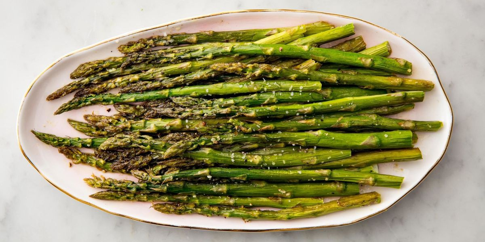

Oven-Roasted Asparagus Recipe

Description
A salty savory recipe using the oven to kill the bitterness of asparagus. Pairs well with grilled fish or lamb.
A very simple dish season it in the beginning and then tossing it into the oven.
Ingredients
- 1 bunch thin asparagus spears, trimmed
- 3 tablespoons olive oil
- 1 1/2 tablespoons grated Parmesan cheese (Optional)
- 1 clove garlic, minced (Optional)
- 1 teaspoon sea salt
- 1/2 teaspoon ground black pepper
- 1 tablespoon lemon juice (Optional)
Steps
- Preheat an oven to 425 degrees F (220 degrees C).
- Place the aspoaragus into a mixing bowl, and drizzle with the olive oil. Toss to coat the spears, then sprinkle with Parmesan cheese, garlic, salt, and pepper. Arrange the asparagus onto a baking sheet in a single layer.
- Bake in the preheated oven until just tender, 12 to 15 minutes depending on thickness. Sprinkle with lemon juice just before serving.